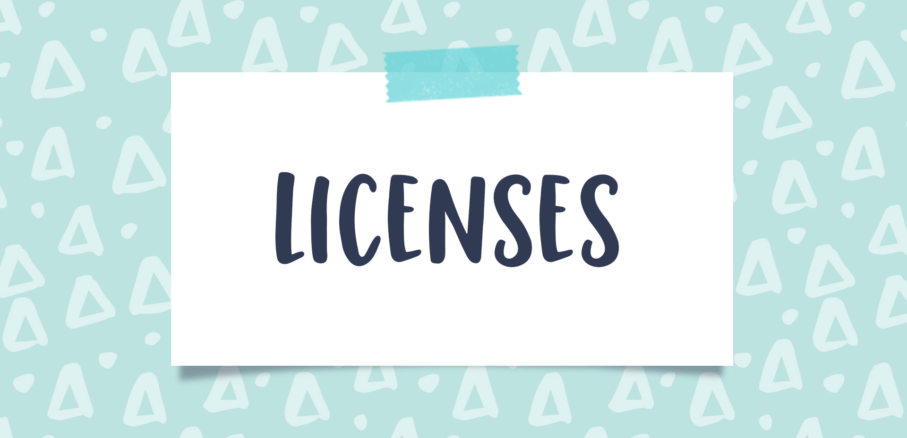

About Me
I am an aspiring Big Data & ML Engineer, Specialist in Data Analysis, Machine Learning Model development, AI model development, Web API, Meta Data, MYSQL database, Python & PHP-based application and Android application development. I am a fourth-year computing science student at Thompson Rivers University. Growing up alongside computers and technology, I have always been fascinated by how technology changed the world and enhanced people's lives. From the fascination and eagerness of learning new technology, I choose my path in computing science and have completed the third year of computing science. Throughout the academic terms, I got interested in several development environments, data structure and data analysis. Now, developing new software or analyzing large data sets and using different classification and regression models, I design and plan various ML models and AI models, which motivated me for my future career. In the future, I would like to do a Master of Data Engineering or Big Data Engineering and I want to see myself as a Big Data & ML Engineer.
Please check out my developed projects:
Github Projects Repository
LinkedIn
Experiences
Data Analyst, Applications and Backend Developer - Fiscal Realities Economists - Internship (Aug 2021 - Present)
Major projects I am working on:
·IDEA ("Indigenous Database of Economic Activities"): Database & Application development, Regression analysis, Implementation of ML algorithms and structural design.
· Revenue & Expenditure Analysis: Ongoing research, analyzing and deploying in MetaData.
· The Canada First Nation Cannabis database: Completed primary research and collected data, ongoing data structure design and database deployment.
· Tulo Expected Impacts Model Application Development.
· Learning Games Development and Analysis.
· Cannabis Jurisdiction Website: Framework and primary work ongoing.
· FR website: Completed the first phase.
Data Analyst - Fiscal Realities Economists -Co-op (Apr 2021- Aug 2021)
Major projects:
· The Canada First Nation Cannabis database..
· A Canadian First Nations Economic Activity database.
· Product Carbon Footprint (PCF).
· Tulo Expected Impacts Model Application Development.
· FR Website development
Full Stack Developer - Upwork (Sep 2020 - Present)
With an experience of 3 years in the field of web development, android application and game development, in which time I spent hours on Upwork and other outsourcing, I'm a full-stack developer who's worked on every technology, tool, framework, and library in existence. Whatever your project entails, I would have done it before. I have a 100% track record of delivering projects on time.
Individual Contributor - Intelcom Express (May 2020 -Sep 2020)
· Route Coordinating & Logistics Support.
· Team Management & Broker Assistance.
· Scanning & Sorting Product.
· Networking Management
Store/Genereal Manager in Training - Dominos Vallyeview (Aug 2019 -Mar 2020)
· Food order and labor statistic management.
· Staffs schedule management and store inspection.
· Quality and Price insurance.
· Safety Management and food-product management.
General Secretary - TRUSU BANGLADESH CLUB (Jan 2019 -Present)
· Lead the community from club base.
· Manage executive team and host events..
· Club fund management, event management, legal advice
and support.
ASSISTANT MANAGER - DOMINOS NORTHSHORE (Feb 2019 -Sep 2019)
· Managing Staffs, Labor Management, Sales prediction.
· Food Management and quality control
· All sales and money management with the end of a day task with all official money and product management
· Inventory management
TECHNICIAN AND SERVICE HELPER - MODERN TECH CO (Feb 2018 -Jun 2018)
· Managing Staffs, Labor Management, Sales prediction.
· Food Management and quality control
· All sales and money management with the end of a day task with all official money and product management
· Inventory management
ASSISTANT MARKETING SUPERVISOR - UNILEVER
BD LTD (Mar 2017 -Nov 2017)
· Analyzed business development and monitored market
trends.
· Developed and implement campaigns for email, online
advertising, search engines and direct mail.
Projects

Local Pizza Store Website (Nov 2020 -Jan 2021)
· A Demo Website For Local Pizza Store In Kamloops.
· Website Developed with PHP, MYSQL Database, Bootstrap.
· Advance uses of AJAX, JSON, SPA, IFrame,PLCs.
Blood Wave (Sep 2020 -Present)
· Android App under development using cross-platform Flutter and Dart Language.
· Using Firebase, there will be a database for all donor and patients.
· Using GPS - patients and their relatives will find the nearest hospital where they can collect blood from a donor.
Diggums-Drones (Sep 2019 -Jun 2020)
· Game that will help you to start learnning LUA code.
· Game developed in Unity and using base platform as android studio .
· Game developed based on Minecraft game and used in an underground environment. By typing the LUA code, the user will command the drone to dig the soil.
THE-ZOOKEEPER_java-MazeGame (Jan 2020 -May 2020)
· Game developed in IntelliJ IDEA with JAVA coding.
· The game has a colour map and designed maze to play and identify
each animal.
· Union Find Java and Maze generator Java code developed to play the
open hand.
MindOfAction-Combat (Jan 2020 -May 2020)
· FPS Action Game, build and develop with high animation environment. Game developed with a full content view with all basic levels.
· C++ language is used to develop this game.
Solitaire_Game (Aug 2019-Nov 2019)
·Java Card game developed under IntelliJ IDEA .
· Using multiple classes to stand basic component use and standard
game machine management.
TGP Demo WEBSITE (08/2019 - 11/2019)
·A Demo Website for a whole Sale company.
· Develop Platform : HTML, JS, CSS , Bootstrap.
· Website also build as base of web application so its a mobile friendly
website with all functionality.
Certificates & Licences

Google Data Analytics
Issued by : Google
Verified by : Coursera.org
Data Analysis with R Programming
Issued by : Google
Verified by : Coursera.org
Google Data Analytics Capstone: Complete a Case Study
Issued by : Google
Verified by : Coursera.org
Share Data Through the Art of Visualization
Issued by : Google
Verified by : Coursera.org
Analyze Data to Answer Question
Issued by : Google
Verified by : Coursera.org
WHMIS (GHS) Trainning Online -(Standard) (April 12,2021- April 11,2024)
Issued by : Danatec
Responsible Service Bc (August 18,2020- August 19,2025)
Issued by : Service BC
Research & Publications
Prediction of Diamonds Price _Machine Learning Project.
Author: Amlan Nag
Android Operating Systems Perform the Best in Dynamic Mobile Computing Environments
Author: Amlan Nag, Megan E. Rouault.
Contact